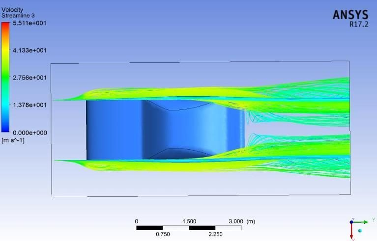

Aerodynamics
Vehicle Aerodynamic Drag with Add-on Devices
CFD study of how a spoiler and a wing change drag and lift on a passenger-car model.
- Category
- Aerodynamics
- Tools
- CATIA V5 · Ansys Workbench Fluent
- Context
- Savitribai Phule Pune University · team project
- Period
- Jul 2020–May 2021
Overview
A vehicle model built in CATIA V5 was analyzed in Ansys Workbench (Fluent) to compare drag and lift coefficients with and without add-on aerodynamic devices.
Setup and method
- Model: vehicle geometry created in CATIA V5 and meshed for Fluent.
- Variants: spoiler and wing add-ons compared on drag coefficient, lift coefficient and downforce.
- Validation: a structured experimental design was used to check the simulation outcomes.
- Team project: model creation and simulation were shared across the team.
Results
Velocity streamlines show how the flow separates over the body and the added devices, which is the basis for comparing drag and downforce between variants.
Figures


Next project: Helical Pipe Heater: Conjugate Heat Transfer →